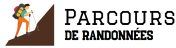
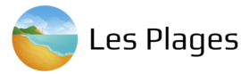
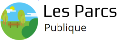

Histoire de Marseille
Naissance de Massalia
Une sardine bouche le port
Naissance de Ricard
Capitale de la culture
Les parcours de randonnée
Le belvédaire
Le tour des goudes
Le tour du mont puget
Les calanques
Les plages
Le prado
Les catalans
La pointe rouge
Corbières
Les parcs
Chanot
Borely
Jardin botanique E.M. Heckel
26ie Centenaire
Les musées



Contactez-nous
Adresse e-mail :
Message